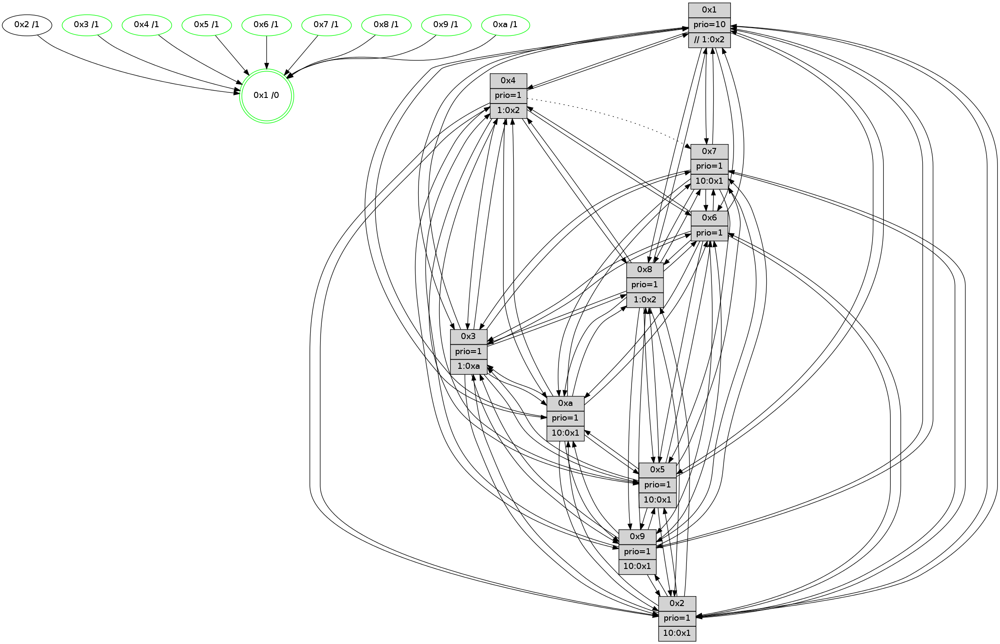

>> << IDX [start] -100 -25 -5 +0 +5 +25 +100 [1075.43924904]
 Previous packets
1070.002319 beacon09(faad) #0 coord=01,02,03,04,05,06,07,0a,09,08 cycle=688.0ms assoc 64 c2 e7
1070.012317 beacon08(faad) #0 coord=01,02,03,04,05,06,07,0a,09,08 cycle=688.0ms assoc 64 b8 aa
1070.023799 [Hello(10): seq=616 sym=6,2,3,8,7,5,9,4,1 sysInfo=hasWarning stat=6:11,15,11,5/2:13,0,1,8/3:4,10,1,10/8:12,0,5,0/7:13,3,10,4/5:5,13,10,14/9:13,10,12,1/4:7,11,13,8/1:15,4,7,1]
1070.026577 [STC(2)->1 #0.156 to-color d=1]
1070.028293 [STC(5)->1 #0.156 tree-change,inconsistent-stability,stable,to-color d=1]
1070.029634 [Hello(4): seq=683 sym=5,7,6,2,3,9,8,10,1 sysInfo= stat=5:11,0,7,14/7:11,6,6,9/6:11,7,6,11/2:14,1,1,12/3:14,4,5,10/9:5,13,12,9/8:3,9,12,4/10:12,0,14,12/1:2,11,15,1]
1070.032944 [Color(5) seq=290 @0:0 prio=1 >10.@1,1.@2,1.@3,1.@4]
1070.034565 [Hello(9): seq=627 sym=2,5,3,4,7,6,8,10,1 sysInfo=hasWarning stat=2:3,1,4,5/5:9,0,3,5/3:4,6,7,14/4:3,4,1,0/7:1,7,4,10/6:2,3,15,10/8:12,2,9,3/10:1,9,9,3/1:7,9,15,1]
1070.037848 [Color(1) seq=364 @0:0 prio=10 >>1.@2,1.@3,1.@4]
1070.040452 [STC(10)->1 #0.156 tree-change,inconsistent-stability,stable,to-color d=1]
1070.042341 [Hello(7): seq=683 sym=2,3,5,6,8,9,10,1 sysInfo=hasWarning stat=2:4,9,14,15/3:11,11,12,14/5:13,7,13,1/6:1,12,12,8/8:15,14,9,1/9:1,2,1,0/10:14,4,15,4/1:9,3,0,0]
1070.044976 [Hello(8): seq=627 sym=5,2,3,4,9,6,7,10,1 sysInfo=hasWarning stat=5:10,4,11,0/2:5,5,7,7/3:3,6,10,14/4:15,8,2,9/9:13,14,11,2/6:11,15,10,12/7:13,3,9,2/10:2,0,13,3/1:12,8,14,0]
1070.047775 [STC(4)->1 #0.156 tree-change,inconsistent-stability,stable,to-color d=1]
1070.049095 [STC(8)->1 #0.156 tree-change,inconsistent-stability,stable,to-color d=1]
1070.051025 [Color(4) seq=263 @0:0 prio=1 >1.@2,1.@3,1.@5,1.@6]
1070.057956 [STC(9)->1 #0.156 tree-change,inconsistent-stability,stable,to-color d=1]
1070.059180 [STC(7)->1 #0.156 tree-change,inconsistent-stability,stable,to-color d=1]
1070.061773 [Color(7) seq=242 @0:0 prio=1 >10.@1,1.@2,1.@3,1.@5]
1070.068587 [TreeStatus(9)-.->1 #0.156 tree-change,inconsistent-stability,stable child=1]
1070.070412 [Color(9) seq=289 @0:0 prio=1 >10.@1,1.@2,1.@3,1.@5]
----------------------------------------------------------------------
1070.710463 beacon01(faad) #0 coord=01,02,03,04,05,06,07,0a,09,08 cycle=688.0ms assoc
-- color-indic=1 64 a8 c4
1070.720444 beacon02(faad) #0 coord=01,02,03,04,05,06,07,0a,09,08 cycle=688.0ms assoc 64 3b f5
1070.730444 beacon03(faad) #0 coord=01,02,03,04,05,06,07,0a,09,08 cycle=688.0ms assoc 64 41 b8
1070.740448 beacon04(faad) #0 coord=01,02,03,04,05,06,07,0a,09,08 cycle=688.0ms assoc 64 36 52
1070.750446 beacon05(faad) #0 coord=01,02,03,04,05,06,07,0a,09,08 cycle=688.0ms assoc 64 4c 1f
1070.760448 beacon06(faad) #0 coord=01,02,03,04,05,06,07,0a,09,08 cycle=688.0ms assoc 64 c2 c8
1070.770446 beacon07(faad) #0 coord=01,02,03,04,05,06,07,0a,09,08 cycle=688.0ms assoc 64 b8 85
1070.780452 beacon0a(faad) #0 coord=01,02,03,04,05,06,07,0a,09,08 cycle=688.0ms assoc 64 c9 8e
1070.790451 beacon09(faad) #0 coord=01,02,03,04,05,06,07,0a,09,08 cycle=688.0ms assoc 64 47 59
1070.800451 beacon08(faad) #0 coord=01,02,03,04,05,06,07,0a,09,08 cycle=688.0ms assoc 64 3d 14
1070.811399 [Hello(1): seq=593 sym=4,2,9,5,10,3,8,6,7 sysInfo=coloring-mode-on,ColoringModeRequestCalled stat=4:8,10,9,2/2:8,1,9,14/9:1,0,8,7/5:11,13,0,7/10:1,11,10,5/3:7,15,13,5/8:15,12,10,1/6:2,13,9,12/7:4,3,8,12]
1070.815407 [Hello(2): seq=680 sym=4,5,7,6,3,9,8,10,1 sysInfo=hasWarning stat=4:3,3,12,8/5:6,2,2,0/7:4,6,10,11/6:8,3,3,10/3:5,3,1,7/9:12,2,4,6/8:8,11,15,9/10:0,4,5,10/1:1,3,1,0]
1070.818443 [Color(10) seq=273 @0:0 prio=1 >10.@1,1.@2,1.@3,1.@5]
1070.820500 [Hello(6): seq=684 sym=2,3,5,4,7,9,8,10,1 mpr= sysInfo=hasWarning stat=2:2,11,11,4/3:13,11,8,10/5:1,15,8,0/4:5,8,2,3/7:12,6,10,9/9:6,6,10,7/8:3,6,5,3/10:7,0,14,12/1:13,15,14,1]
1070.824420 [Hello(5): seq=684 sym=7,6,4,3,1,9,8,10,2 sysInfo=hasWarning stat=7:13,8,14,11/6:12,14,15,1/4:14,8,8,10/3:12,11,3,12/1:14,15,1,1/9:12,11,9,8/8:3,5,6,0/10:8,1,3,7/2:0,9,9,3]
1070.828050 [Color(6) seq=316 @0:0 prio=1]
1070.829304 [Hello(3): seq=684 sym=1,7,6,2,4,8,9,10,5 sysInfo=hasWarning stat=1:13,9,9,0/7:2,8,2,9/6:14,4,1,4/2:13,13,6,14/4:5,15,8,9/8:0,12,1,2/9:14,13,7,13/10:1,2,4,3/5:5,0,13,14]
1070.832650 [Color(8) seq=306 @0:0 prio=1 >1.@2,1.@3,1.@5,1.@a]
1070.835129 [Color(3) seq=313 @0:0 prio=1 >1.@a]
1070.839864 [TreeStatus(2)-.->1 #0.156 tree-change,inconsistent-stability child=1]
----------------------------------------------------------------------
1071.498593 beacon01(faad) #0 coord=01,02,03,04,05,06,07,0a,09,08 cycle=688.0ms assoc
-- color-indic=1 64 14 c1
1071.508576 beacon02(faad) #0 coord=01,02,03,04,05,06,07,0a,09,08 cycle=688.0ms assoc 64 87 f0
1071.518576 beacon03(faad) #0 coord=01,02,03,04,05,06,07,0a,09,08 cycle=688.0ms assoc 64 fd bd
1071.528576 beacon04(faad) #0 coord=01,02,03,04,05,06,07,0a,09,08 cycle=688.0ms assoc 64 8a 57
1071.538575 beacon05(faad) #0 coord=01,02,03,04,05,06,07,0a,09,08 cycle=688.0ms assoc 64 f0 1a
1071.548575 beacon06(faad) #0 coord=01,02,03,04,05,06,07,0a,09,08 cycle=688.0ms assoc 64 7e cd
1071.558576 beacon07(faad) #0 coord=01,02,03,04,05,06,07,0a,09,08 cycle=688.0ms assoc 64 04 80
1071.568580 beacon0a(faad) #0 coord=01,02,03,04,05,06,07,0a,09,08 cycle=688.0ms assoc 64 75 8b
1071.578581 beacon09(faad) #0 coord=01,02,03,04,05,06,07,0a,09,08 cycle=688.0ms assoc 64 fb 5c
1071.588583 beacon08(faad) #0 coord=01,02,03,04,05,06,07,0a,09,08 cycle=688.0ms assoc 64 81 11
1071.599780 [Hello(10): seq=617 sym=6,2,3,8,7,5,9,4,1 sysInfo=hasWarning stat=6:12,0,11,5/2:13,0,1,9/3:5,11,1,10/8:13,1,6,0/7:14,4,11,4/5:6,13,10,14/9:13,11,13,2/4:7,12,14,8/1:0,4,7,1]
1071.602730 [Color(5) seq=291 @0:0 prio=1 >10.@1,1.@2,1.@3,1.@4]
1071.605546 [Hello(4): seq=684 sym=5,7,6,2,3,9,8,10,1 sysInfo= stat=5:12,0,7,14/7:11,7,7,9/6:12,8,6,11/2:15,1,2,13/3:15,5,5,10/9:5,14,13,10/8:3,10,12,4/10:13,1,14,12/1:3,11,15,1]
1071.608216 [Color(1) seq=365 @0:0 prio=10 >>1.@2,1.@3,1.@4]
1071.610623 [Color(4) seq=264 @0:0 prio=1 >1.@2,1.@3,1.@5,1.@6]
1071.617990 [Hello(7): seq=684 sym=2,3,5,6,8,9,10,1 sysInfo=hasWarning stat=2:5,9,15,0/3:12,12,12,14/5:14,7,13,1/6:2,13,12,8/8:15,15,9,1/9:1,3,1,1/10:15,5,15,4/1:10,3,0,0]
1071.620677 [Color(7) seq=243 @0:0 prio=1 >10.@1,1.@2,1.@3,1.@5]
1071.623658 [Color(9) seq=290 @0:0 prio=1 >10.@1,1.@2,1.@3,1.@5]
----------------------------------------------------------------------
1072.286723 beacon01(faad) #0 coord=01,02,03,04,05,06,07,0a,09,08 cycle=688.0ms assoc
-- color-indic=1 64 d0 cf
1072.296706 beacon02(faad) #0 coord=01,02,03,04,05,06,07,0a,09,08 cycle=688.0ms assoc 64 43 fe
1072.306705 beacon03(faad) #0 coord=01,02,03,04,05,06,07,0a,09,08 cycle=688.0ms assoc 64 39 b3
1072.316705 beacon04(faad) #0 coord=01,02,03,04,05,06,07,0a,09,08 cycle=688.0ms assoc 64 4e 59
1072.326705 beacon05(faad) #0 coord=01,02,03,04,05,06,07,0a,09,08 cycle=688.0ms assoc 64 34 14
1072.336707 beacon06(faad) #0 coord=01,02,03,04,05,06,07,0a,09,08 cycle=688.0ms assoc 64 ba c3
1072.346707 beacon07(faad) #0 coord=01,02,03,04,05,06,07,0a,09,08 cycle=688.0ms assoc 64 c0 8e
1072.356714 beacon0a(faad) #0 coord=01,02,03,04,05,06,07,0a,09,08 cycle=688.0ms assoc 64 b1 85
1072.366712 beacon09(faad) #0 coord=01,02,03,04,05,06,07,0a,09,08 cycle=688.0ms assoc 64 3f 52
1072.376711 beacon08(faad) #0 coord=01,02,03,04,05,06,07,0a,09,08 cycle=688.0ms assoc 64 45 1f
1072.387881 [Hello(2): seq=681 sym=4,5,7,6,3,9,8,10,1 sysInfo=hasWarning stat=4:4,4,12,8/5:6,3,2,0/7:5,7,10,11/6:8,3,3,10/3:5,3,1,7/9:13,3,4,6/8:8,11,15,9/10:1,4,5,10/1:2,4,1,0]
1072.390933 [Hello(5): seq=685 sym=7,6,4,3,1,9,8,10,2 sysInfo=hasWarning stat=7:14,9,14,11/6:12,15,15,1/4:15,9,8,10/3:13,12,3,12/1:14,0,1,1/9:13,12,9,8/8:3,6,6,0/10:9,1,3,7/2:0,9,9,4]
1072.393975 [Hello(3): seq=685 sym=1,7,6,2,4,8,9,10,5 sysInfo=hasWarning stat=1:14,10,9,0/7:3,9,2,9/6:14,4,1,4/2:13,13,6,15/4:6,0,8,9/8:1,12,1,2/9:14,14,7,13/10:2,2,4,3/5:5,1,13,14]
1072.397755 [Color(10) seq=274 @0:0 prio=1 >10.@1,1.@2,1.@3,1.@5]
1072.400637 [Hello(6): seq=685 sym=2,3,5,4,7,9,8,10,1 sysInfo=hasWarning stat=2:2,11,11,5/3:14,12,8,10/5:1,0,8,0/4:6,9,2,3/7:13,7,10,9/9:6,7,10,7/8:4,7,5,3/10:8,0,14,12/1:14,0,14,1]
1072.403472 [Color(6) seq=317 @0:0 prio=1]
1072.406355 [Color(3) seq=314 @0:0 prio=1 >1.@a]
1072.409683 [Color(8) seq=307 @0:0 prio=1 >1.@2,1.@3,1.@5,1.@a]
1072.415069 [Hello(1): seq=594 sym=4,2,9,5,10,3,8,6,7 sysInfo=coloring-mode-on,ColoringModeRequestCalled stat=4:8,11,9,2/2:9,1,9,15/9:2,1,8,7/5:12,13,0,7/10:2,12,10,5/3:8,0,13,5/8:15,13,10,1/6:3,14,9,12/7:5,4,8,12]
----------------------------------------------------------------------
1073.074854 beacon01(faad) #0 coord=01,02,03,04,05,06,07,0a,09,08 cycle=688.0ms assoc
-- color-indic=1 64 6c ca
1073.084836 beacon02(faad) #0 coord=01,02,03,04,05,06,07,0a,09,08 cycle=688.0ms assoc 64 ff fb
1073.094837 beacon03(faad) #0 coord=01,02,03,04,05,06,07,0a,09,08 cycle=688.0ms assoc 64 85 b6
1073.104837 beacon04(faad) #0 coord=01,02,03,04,05,06,07,0a,09,08 cycle=688.0ms assoc 64 f2 5c
1073.114836 beacon05(faad) #0 coord=01,02,03,04,05,06,07,0a,09,08 cycle=688.0ms assoc 64 88 11
1073.124837 beacon06(faad) #0 coord=01,02,03,04,05,06,07,0a,09,08 cycle=688.0ms assoc 64 06 c6
1073.134837 beacon07(faad) #0 coord=01,02,03,04,05,06,07,0a,09,08 cycle=688.0ms assoc 64 7c 8b
1073.144843 beacon0a(faad) #0 coord=01,02,03,04,05,06,07,0a,09,08 cycle=688.0ms assoc 64 0d 80
1073.154841 beacon09(faad) #0 coord=01,02,03,04,05,06,07,0a,09,08 cycle=688.0ms assoc 64 83 57
1073.164842 beacon08(faad) #0 coord=01,02,03,04,05,06,07,0a,09,08 cycle=688.0ms assoc 64 f9 1a
1073.176056 [Hello(8): seq=629 sym=5,2,3,4,9,6,7,10,1 sysInfo=hasWarning stat=5:10,4,11,0/2:6,5,7,8/3:3,7,10,14/4:15,9,2,9/9:13,0,12,3/6:11,15,10,12/7:14,5,10,2/10:2,0,13,3/1:14,8,14,0]
1073.178979 [Color(5) seq=292 @0:0 prio=1 >10.@1,1.@2,1.@3,1.@4]
1073.180849 [Hello(4): seq=685 sym=5,6,2,3,9,8,10,1 asym=7 sysInfo= stat=5:13,1,7,14/6:13,9,6,11/2:0,1,2,13/3:0,6,5,10/9:6,15,13,10/8:3,11,12,4/10:14,2,14,12/1:4,11,15,1/7:12,8,7,9]
1073.183827 [Hello(10): seq=618 sym=6,2,3,8,7,5,9,4,1 sysInfo=hasWarning stat=6:13,1,11,5/2:14,0,1,9/3:5,12,1,10/8:14,2,6,0/7:15,5,11,4/5:6,14,10,14/9:13,12,13,2/4:8,13,14,8/1:1,5,7,1]
1073.187516 [Color(7) seq=244 @0:0 prio=1 >10.@1,1.@2,1.@3,1.@5]
1073.189647 [Color(4) seq=265 @0:0 prio=1 >1.@2,1.@3,1.@5,1.@6]
1073.191342 [Hello(9): seq=629 sym=2,5,3,4,7,6,8,10,1 sysInfo=hasWarning stat=2:5,1,5,6/5:11,1,3,5/3:6,8,7,14/4:3,4,1,0/7:1,7,5,10/6:4,5,15,10/8:12,4,9,3/10:3,11,9,3/1:9,9,15,1]
1073.194154 [Color(9) seq=291 @0:0 prio=1 >10.@1,1.@2,1.@3,1.@5]
1073.198337 [STC(1) #0.157 tree-change,inconsistent-stability,stable,to-color d=0]
1073.200908 [Color(1) seq=366 @0:0 prio=10 >>1.@2,1.@3,1.@4]
----------------------------------------------------------------------
1073.862987 beacon01(faad) #0 coord=01,02,03,04,05,06,07,0a,09,08 cycle=688.0ms assoc
-- color-indic=1 64 58 d2
1073.872968 beacon02(faad) #0 coord=01,02,03,04,05,06,07,0a,09,08 cycle=688.0ms assoc 64 cb e3
1073.882969 beacon03(faad) #0 coord=01,02,03,04,05,06,07,0a,09,08 cycle=688.0ms assoc 64 b1 ae
1073.892969 beacon04(faad) #0 coord=01,02,03,04,05,06,07,0a,09,08 cycle=688.0ms assoc 64 c6 44
1073.902969 beacon05(faad) #0 coord=01,02,03,04,05,06,07,0a,09,08 cycle=688.0ms assoc 64 bc 09
1073.912971 beacon06(faad) #0 coord=01,02,03,04,05,06,07,0a,09,08 cycle=688.0ms assoc 64 32 de
1073.922969 beacon07(faad) #0 coord=01,02,03,04,05,06,07,0a,09,08 cycle=688.0ms assoc 64 48 93
1073.932974 beacon0a(faad) #0 coord=01,02,03,04,05,06,07,0a,09,08 cycle=688.0ms assoc 64 39 98
1073.942975 beacon09(faad) #0 coord=01,02,03,04,05,06,07,0a,09,08 cycle=688.0ms assoc 64 b7 4f
1073.952975 beacon08(faad) #0 coord=01,02,03,04,05,06,07,0a,09,08 cycle=688.0ms assoc 64 cd 02
1073.964441 [Hello(5): seq=686 sym=7,6,4,3,1,9,8,10,2 sysInfo=hasWarning stat=7:14,10,14,11/6:13,0,15,1/4:0,10,8,10/3:14,13,3,12/1:15,1,2,1/9:14,13,9,8/8:4,7,6,0/10:10,2,3,7/2:0,9,9,4]
1073.967111 [STC(9)->1 #0.157 tree-change,inconsistent-stability,stable,to-color d=1]
1073.968347 [Hello(2): seq=682 sym=4,5,7,6,3,9,8,10,1 sysInfo=hasWarning stat=4:5,5,12,8/5:7,4,2,0/7:6,8,10,11/6:9,4,3,10/3:6,4,1,7/9:14,4,4,6/8:9,12,15,9/10:1,5,5,10/1:3,5,2,0]
1073.971890 [Hello(3): seq=686 sym=1,7,6,2,4,8,9,10,5 sysInfo=hasWarning stat=1:15,11,10,0/7:3,10,2,9/6:14,4,1,4/2:14,13,6,15/4:7,1,8,9/8:2,13,1,2/9:15,15,7,13/10:3,2,4,3/5:6,2,13,14]
1073.974909 [STC(5)->1 #0.157 tree-change,inconsistent-stability,stable,to-color d=1]
1073.976743 [STC(2)->1 #0.157 tree-change,inconsistent-stability,to-color d=1]
1073.978117 [STC(8)->1 #0.157 tree-change,inconsistent-stability,stable,to-color d=1]
1073.981448 [Hello(6): seq=686 sym=2,3,5,4,7,9,8,10,1 sysInfo=hasWarning stat=2:3,11,11,5/3:14,13,8,10/5:2,1,8,0/4:7,10,2,3/7:14,8,10,9/9:7,8,10,7/8:5,8,5,3/10:8,0,14,12/1:15,1,15,1]
1073.984054 [Color(8) seq=308 @0:0 prio=1 >1.@2,1.@3,1.@5,1.@a]
1073.986380 [STC(10)->1 #0.157 tree-change,inconsistent-stability,stable,to-color d=1]
1073.987918 [STC(3)->1 #0.157 tree-change,inconsistent-stability,stable,to-color d=1]
1073.991474 [Color(3) seq=315 @0:0 prio=1 >1.@a]
1073.994296 [Hello(1): seq=595 sym=4,2,9,5,10,3,8,6,7 sysInfo=coloring-mode-on,ColoringModeRequestCalled stat=4:8,11,9,2/2:9,1,9,15/9:2,1,8,7/5:12,14,0,7/10:2,12,10,5/3:8,0,13,5/8:0,13,10,1/6:3,14,9,12/7:5,4,8,12]
1073.997900 [Color(10) seq=275 @0:0 prio=1 >10.@1,1.@2,1.@3,1.@5]
1074.000047 [STC(6)->1 #0.157 tree-change,inconsistent-stability,stable,to-color d=1]
1074.002311 [STC(7)->1 #0.157 tree-change,inconsistent-stability,stable,to-color d=1]
1074.003922 [Color(6) seq=318 @0:0 prio=1]
----------------------------------------------------------------------
1074.651119 beacon01(faad) #0 coord=01,02,03,04,05,06,07,0a,09,08 cycle=688.0ms assoc
-- color-indic=1 64 e4 d7
1074.661101 beacon02(faad) #0 coord=01,02,03,04,05,06,07,0a,09,08 cycle=688.0ms assoc 64 77 e6
1074.671101 beacon03(faad) #0 coord=01,02,03,04,05,06,07,0a,09,08 cycle=688.0ms assoc 64 0d ab
1074.681102 beacon04(faad) #0 coord=01,02,03,04,05,06,07,0a,09,08 cycle=688.0ms assoc 64 7a 41
1074.691102 beacon05(faad) #0 coord=01,02,03,04,05,06,07,0a,09,08 cycle=688.0ms assoc 64 00 0c
1074.701103 beacon06(faad) #0 coord=01,02,03,04,05,06,07,0a,09,08 cycle=688.0ms assoc 64 8e db
1074.711101 beacon07(faad) #0 coord=01,02,03,04,05,06,07,0a,09,08 cycle=688.0ms assoc 64 f4 96
1074.721106 beacon0a(faad) #0 coord=01,02,03,04,05,06,07,0a,09,08 cycle=688.0ms assoc 64 85 9d
1074.731107 beacon09(faad) #0 coord=01,02,03,04,05,06,07,0a,09,08 cycle=688.0ms assoc 64 0b 4a
1074.741106 beacon08(faad) #0 coord=01,02,03,04,05,06,07,0a,09,08 cycle=688.0ms assoc 64 71 07
1074.752635 [Hello(10): seq=619 sym=6,2,3,8,7,5,9,4,1 sysInfo=hasWarning stat=6:13,2,12,5/2:14,0,1,9/3:5,12,1,10/8:14,2,6,0/7:15,6,12,4/5:7,14,10,14/9:14,13,14,2/4:8,14,14,8/1:1,6,8,1]
1074.755354 [Color(5) seq=293 @0:0 prio=1 >10.@1,1.@2,1.@3,1.@4]
1074.757231 [Color(1) seq=367 @0:0 prio=10 >>1.@2,1.@3,1.@4]
1074.758823 [Hello(7): seq=686 sym=2,3,5,6,8,9,10,1 sysInfo=hasWarning stat=2:6,9,15,0/3:13,13,12,14/5:15,9,13,1/6:3,15,12,8/8:0,0,9,1/9:2,5,1,1/10:0,6,15,4/1:11,4,1,0]
1074.761835 [Color(7) seq=245 @0:0 prio=1 >10.@1,1.@2,1.@3,1.@5]
1074.764022 [Color(9) seq=292 @0:0 prio=1 >10.@1,1.@2,1.@3,1.@5]
1074.767572 [Hello(8): seq=630 sym=5,2,3,4,9,6,7,10,1 sysInfo=hasWarning stat=5:11,5,11,0/2:6,5,7,8/3:3,8,11,14/4:0,10,2,9/9:14,1,13,3/6:11,0,11,12/7:14,6,11,2/10:3,1,14,3/1:15,9,15,0]
1074.770599 [Hello(4): seq=686 sym=5,6,2,3,9,8,10,1 asym=7 sysInfo= stat=5:13,2,7,14/6:14,10,7,11/2:0,1,2,13/3:0,7,6,10/9:7,0,13,10/8:4,12,13,4/10:14,3,15,12/1:5,12,0,1/7:12,8,8,9]
1074.775082 [Color(4) seq=266 @0:0 prio=1 >1.@2,1.@3,1.@5,1.@6]